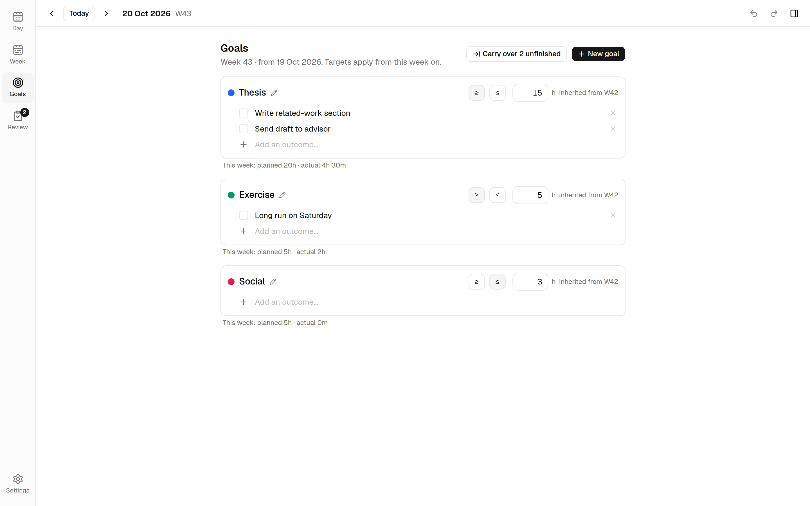
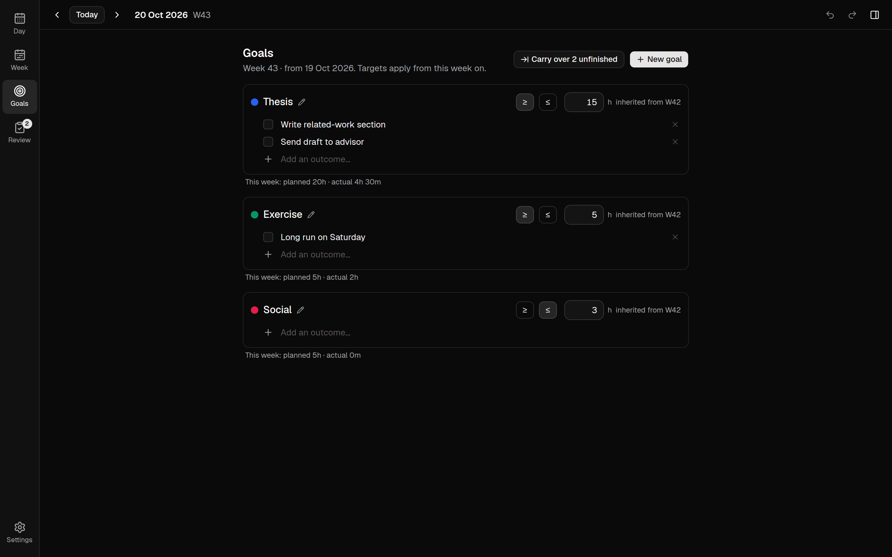
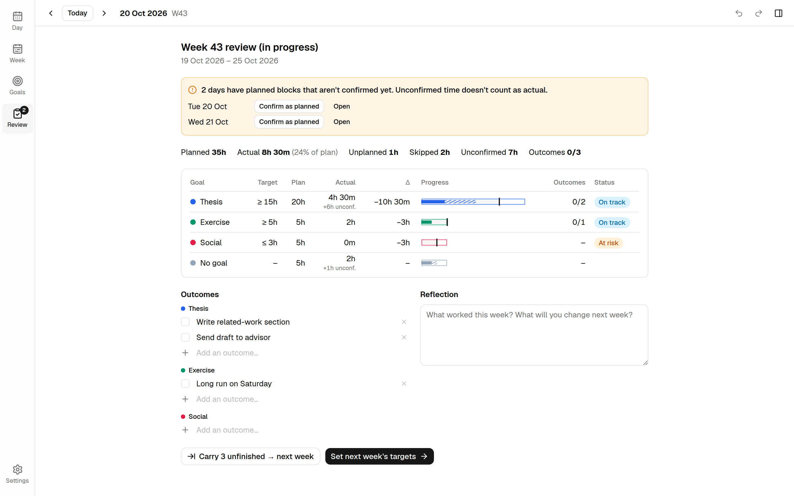
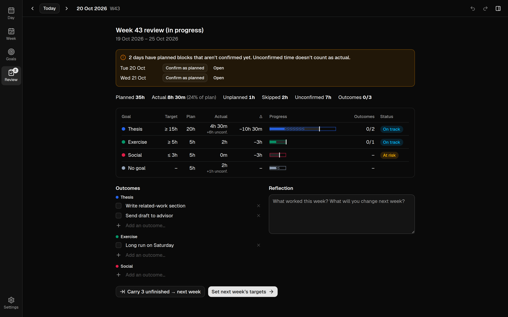

Documentation / Getting started
Goals and reviews
Goals give your time a purpose. Each goal can have a weekly target, a checklist of outcomes, and a status in the weekly review.
Creating goals
Open the Goals view (g) and click New goal. A goal has:
- Name and color. The color is used for its blocks everywhere in the app.
- Weekly target: at least or at most a number of hours per week. Type it as
15,7.5,1h30or90m. Leave it empty for a goal judged by its outcomes alone. - Spread over (at-least goals): the days you work on it, for example Monday–Friday. The target is paced over these days, so a 15 h weekday goal expects about 3 h a day and isn't behind on Saturday.
Assign a goal to a block in the block editor, from the Set goal context menu, or by pressing 1–9 with the block selected. Blocks without a goal are counted as No goal.


Weekly targets
Targets come in two kinds:
- At least (≥): time you want to reach, for example Thesis ≥ 15 h.
- At most (≤): time you want to stay under, for example Social ≤ 3 h.
A target applies from the week you set it and carries forward to later weeks until you change it. Earlier weeks keep the target they had. If you change this week's target by mistake, Use previous next to it goes back to the earlier one. Switching a goal between at least and at most applies to all its weeks, so it's in the goal's edit dialog rather than one click away.
A goal created in the middle of a week gets a prorated target for that first week: only the days left count.
How a goal is judged
Only confirmed time counts. Plan blocks you haven't confirmed are shown as unconfirmed and don't count until you confirm them, and the plan itself is a forecast shown next to the status, never the status.
During the week, an at least goal is compared with a steady pace over its days. The dashed notch on its progress bar is where that pace would be by now.
- On pace: logged time is at most a day's share behind the steady pace. Monday morning is always on pace.
- Behind: more than a day's share behind. The line under it says by how much, and whether the rest of your plan covers the gap.
- Met: the target is reached. Once the week is over, a goal is Met or Missed.
- Within limit, Watch, Over (at most): under the limit; under it now, but what's still planned would go over; over it.
- Planned / Under-planned: for a week that hasn't started, whether its plan covers the target.
- In progress: a goal with outcomes and no time target. When the week ends it's Met if every outcome is done.
Outcomes
Each goal has a checklist of outcomes for the week: concrete results such as Send draft to advisor. Hours tell you how much time you spent; outcomes tell you whether it produced anything.
Unfinished outcomes can be carried into the next week with Carry over on the Goals page or in the review.
Archiving
Archiving a goal hides it from goal pickers from the current week on, whichever week you're viewing. Past weeks keep it. A goal can only be deleted if no block or outcome uses it.
Week budget
Press Ctrl+B to open the week budget panel. It shows each goal's status and progress against its target, and this week's outcomes, which you can tick off directly. The Goals page shows the same status for each goal.
Weekly review
The Review view (r) summarizes a week:
- A warning for days that still have unconfirmed blocks, with a one-click Confirm as planned.
- Totals for planned, actual, unplanned, skipped and unconfirmed time, and outcomes completed.
- For every goal: target, plan, actual, the difference, a progress bar, outcomes and a status (see How a goal is judged).
- The outcome checklist and a reflection note: what worked, and what to change next week.
From the review you can carry unfinished outcomes forward and go straight to setting next week's targets.

